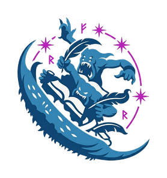
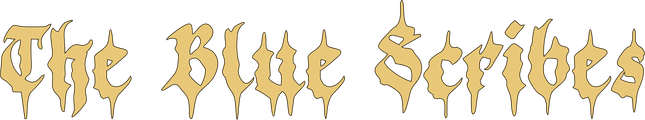
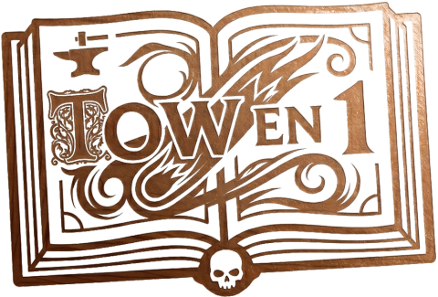
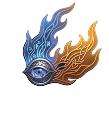

Oracle démoniaque des règles · The Old World
🧪
Liber Caelestis
0
⚙️
☰
Applications

TOW en 1
Toutes les règles en 1

Augur
Présages du champ de bataille
💳
Mes écus
—
🪙
Refaire le plein d'écus
➤
Entrée pour envoyer · Maj+Entrée pour un saut de ligne
Réglages
✕
Clé API Anthropic
Enregistrer
Effacer la clé
Avancé — proxy (clé cachée)
URL du proxy (Cloudflare Worker)
Activer le proxy
Désactiver
Liber Caelestis — questions à évaluer
✕
Exporter (JSON)